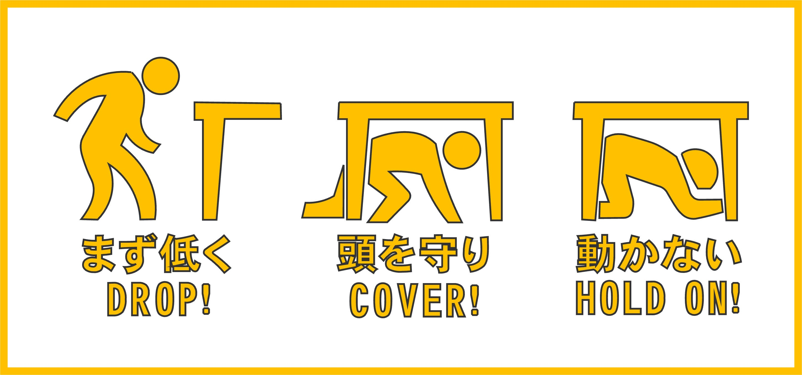

第73回新宿祭開催について
第73回新宿祭は、
11月19日(金) 、11月20日(土) 、11月21日(日) 、12月5日(日) に開催いたします！
※12月5日はアーティストライブの配信のみ。
▶第73回新宿祭開催形態について
▶ステージタイムスケジュールはこちらから！
▶コンテンツ一覧はこちらから！
スタッフがご案内します
ご不明な点がありましたら、お近くの学園祭スタッフへお声かけください。
下のスタッフジャンパーが目印です。
新型コロナウイルス感染症対策について
新宿祭では東京都のガイドラインに基づいて、適切な新型コロナウイルス感染症対策を行っております。
来場者の皆様も徹底した感染症対策へのご協力をよろしくお願いいたします。
▶第73回新宿祭の新型コロナウイルス感染症対策の取り組みはコチラ
受付へお越しください
落し物や迷子、トラブルなど、お困りの際は受付へお越しください。
学園祭スタッフが常駐しています。
アンケートにご協力ください
アンケートにご協力していただくと大抽選会にご参加いただけます。
来場者の皆様のご意見・ご感想をお聞かせください。今後の新宿祭運営に役立たせていただきます。
会場内での飲酒は禁止です
喫煙所以外の喫煙は禁止です。
喫煙所は、1階の西口側のエントランスを出て左側にございます。
場所が分からない場合は、フロアマップをご覧になるか、学園祭スタッフまでお尋ねください。
ペットをお連れのお客様へ
新宿祭にてペットとの同伴はできませんので、ご了承ください。
災害や事故などの緊急事について
●ケガや病気の場合
ケガをしてしまった場合や体調が悪くなった場合、またそれに該当する方を見かけた場合は、お近くのスタッフにお声掛けください。健康相談室までご案内いたします。
人が倒れるなど緊急の場合には、黄色の腕章をつけたスタッフをお呼びください。腕章をつけたスタッフは、上級救命講習を受講し、上級救命認定証を所持しています。
●火災や地震が起きた場合
火災が発生した場合、直ちにスタッフをお呼びください。
地震などの自然災害が起こった場合は、まずご自身の安全を確保してください。

●新宿キャンパス特有の避難方法
緊急時、奇数階にいる人は都庁側(西側)の階段から、避難、偶数階にいる人は新宿駅側の貨物エレベーターがある方(東側)の階段から避難してください。
電力と安全の確保が確認できるまでは、エレベーターの使用は厳禁です。(車椅子等、足の悪い方はスタッフがご案内いたします。)
安全が確認できましたら、スタッフの指示をよく聞き、命を守る行動を行ってください。
緊急連絡先について
その他、ご不明点がございましたら下記にご連絡ください。
連絡先
工学院大学 学園祭実行委員会 新宿祭実行部
Tel: 03-3348-9638
E-mail: wws5011@ns.kogakuin.ac.jp
G-mail: shinjukusai73@gmail.com